Homework-使用SADPBA完成软件系统的需求分析、软件体系结构设计及系统设计
目录
简介
计算机游戏是以个人计算机为操作平台，通过人机交互的形式来实现的娱乐方式。计算机游戏也是一种软件，其开发过程也需要进行一定的需求分析、体系的结构设计及系统设计。
（1）实时循环：计算机游戏是一种实时应用软件，实时应用软件就要求软件在接收到用户输入后给出的响应必须在给定的一个时间段内。在具有联机功能的游戏还要考虑网络延迟问题。
（2）性能限制：计算机游戏往往是对计算机性能要求最高的软件种类之一。游戏必须以每秒高于 25 帧的速度显示，这往往就需要开发者对游戏的表现上加以限制或是对游戏的代码框架上加以优化。
（3）不稳定性：计算机游戏要求接受用户输入并作出响应。用户的输入后得不出预期的结果就称为游戏产生了 bug。用户的输入并不可预测，需要开发者尽可能考虑用户所有可能的输入情况。在具有联机功能的游戏还要考虑用户掉线等问题。
随着计算机技术的发展，现在市面上已有多种游戏引擎方便开发者进行游戏开发。本文以 Unity 游戏引擎开发的一款赛车游戏为例，并说明使用 SADPBA 的详细过程。
应用 SADPBA
需求分析
赛车游戏，简单来说就是赛车在赛道上跑，需要赛道和赛车两个元素。在本游戏中，用户可以操纵赛车自行在赛道中漫游（单机模式），自行设计并建造赛道（建造模式），与其他用户联机进行赛车比赛（联机模式）。
在电脑上模拟出赛车驾驶的感受，需要遵循现实生活中的物理原理。用户可以操控汽车进行加速、刹车、转向、氮气加速等操作。赛车冲出赛道时，可以重置赛车回重生点，用户在操控赛车时的用例图如图 1 所示。
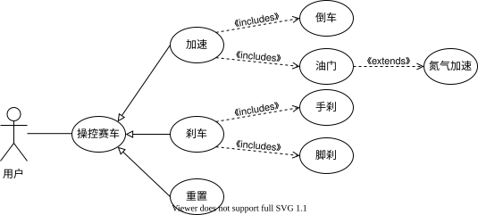
我们把赛道抽象为由一个网格系统中放置着的各个赛道元件组成的文件，由 xml 格式存储这些数据。用户通过摆放不同种类的赛道元件并生成赛道，用户在建造模式下的用例图如图 2 所示。
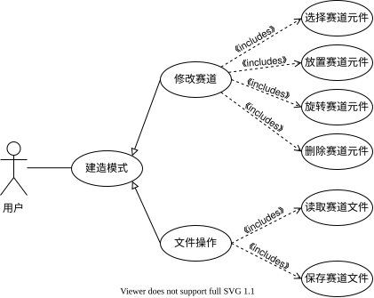
联机模式允许不同用户之间进行局域网联机游戏，这种设计方式不需要用户接入公共互联网。联机模式下的流程图如图 3 所示。
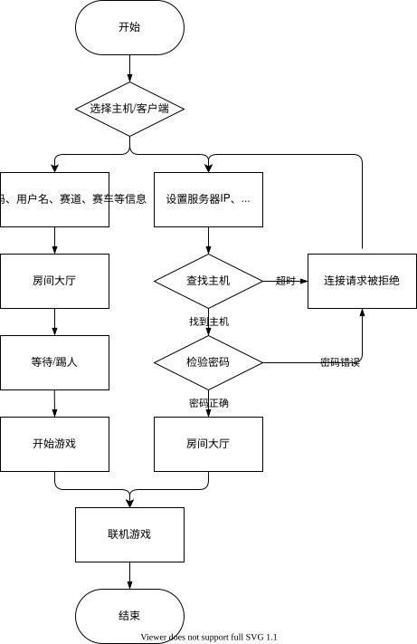
服务器的主机亦是一个客户端的主机，在游戏中便可直接搭建，无需另外打开服务器的应用程序。
在建立服务器时，服务器应选择相应的赛道信息，设置端口号和密码。
客户端输入正确的服务器IP地址和端口号后尝试连接服务器。同时向服务器发送头像、名称、密码、赛车型号等信息。
在所有用户都已准备后，由主机端开始游戏。
游戏还需要设计相应的 UI 界面，以让用户可以方便地与计算机进行交互，UI 的用例图如图 4 所示。
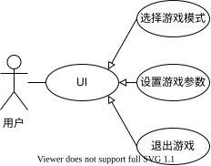
归纳上述各点，得到用例包的关系图（见图 5），以此作为体系结构设计阶段的起始点。
体系结构设计
游戏的用例包关系图如下图所示：
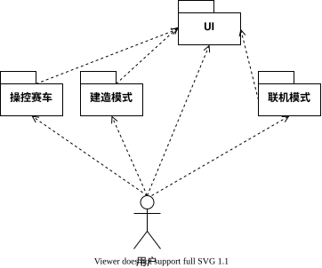
在软件设计过程中如果选择了正确合适的软件体系结构风格，将会对设计过程有极大的帮助。我们使用 PSAS 方法对软件体系结构进行设计。使用 PSAS 方法可以在开发过程中不断预测最合适的体系结构风格，这样可以得到相对比较优良的设计。
根据之前的需求分析，设计出游戏的各个功能，画出组件图如图 6 所示。
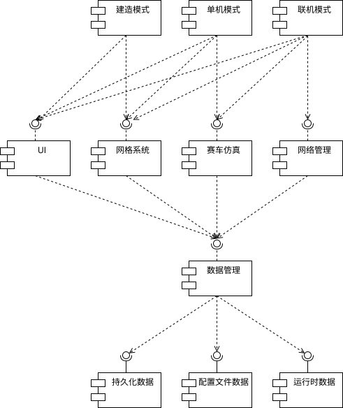
各个构件使用动态调用的方式连接，控制因素、数据因素以垂直同步的形式。对比 PSAS 给出的表（如表 1 所示），根据 PSAS 方法，认定面向对象风格和分层风格最适合本游戏的体系结构设计。
| Style | Constituent Parts | Control Issues | Data Issues | Control/Data Interaction | |||
|---|---|---|---|---|---|---|---|
| Components | Connections | Topology | Synchronicity | Topology | Continuity | Isomorphic Shapes | |
| Data Flow Architectural Styles | |||||||
| Batch Sequential | Stand-alone programs | Batch data | Linear | Sequential | Linear | Sporadic | Yes |
| Data-Flow Network | Transducers | Data Stream | Arbitrary | Asynchronous | Arbitrary | Continuous | Yes |
| Pipes and Filter | Transducers | Data Stream | Linear | Asynchronous | Linear | Continuous | Yes |
| Call and Return | |||||||
| Main Program/Subroutines | Procedure | Procedure Calls | Hierarchical | Sequential | Arbitrary | Sporadic | No |
| Abstract Data Types | Managers | Static Calls | Arbitrary | Sequential | Arbitrary | Sporadic | Yes |
| Objects | Managers | Dynamic Calls | Arbitrary | Sequential | Arbitrary | Sporadic | Yes |
| Call based Client Server | Programs | Calls or RPC | Star | Synchronous | Star | Sporadic | Yes |
| Layered | - | - | Hierarchical | Any | Hierarchical | Sporadic | Often |
| Independent Components | |||||||
| Event Systems | Processes | Signals | Arbitrary | Asynchronous | Arbitrary | Sporadic | Yes |
| Communicating Processes | Processes | Message Protocols | Arbitrary | Any but Sequential | Arbitrary | Sporadic | Possibly |
| Data Centered | |||||||
| Repository | Memory, Computations | Queries | Star | Asynchronous | Star | Sporadic | Possibly |
| Blackboard | Memory, Components | Direct Access | Star | Asynchronous | Star | Sporadic | No |
我们将游戏的结构大致分为 5 层，操作系统层、框架层、数据层、管理层及表现层，分层的状况如图 7 所示。
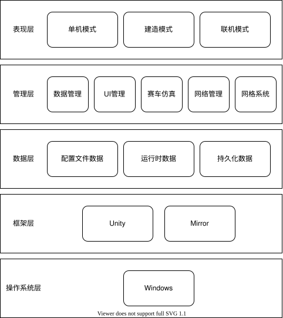
（1）游戏设计在基于 Windows 平台，操作系统对计算机系统的各项资源板块开展调度工作，操作系统层向上层提供程序接口。
（2）游戏主要使用 Unity 游戏引擎和基于 Unity 游戏引擎的 Mirror 网络框架。游戏基于 Unity 游戏引擎实现，它允许用户使用 C# 语言编写游戏，C# 是一种完全面向对象的语言。联机部分使用 Mirror 协助实现，它封装了 OSI 网络七层模型中应用层以下的层次。
（3）数据层主要存储游戏中用到很多数据：如配置文件数据、运行时数据、持久化数据等。
（4）管理层主要处理数据层中的各种数据，以实现游戏中的各种功能。
（5）表现层将游戏中的各种功能表现出来供用户使用。
系统设计
现在可以将体系结构转化为实现相关模型，使用 UML 绘制系统草图如图 8 所示。
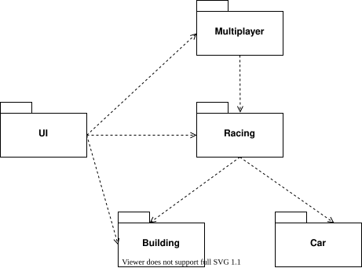
（1）Car 系统负责接受用户输入，模拟真实环境下的赛车物理等。
（2）Building 系统负责赛道的建造，赛道文件的存储等。
（3）Racing 系统依赖 Car 系统，Building 系统，结合赛车和赛道，提供完整的赛车竞赛功能。
（4）Muliplayer 系统在 Racing 系统上，实现多人联机功能。
（5）UI 系统负责各个功能下的 UI。
Car 系统的类图如图 9 所示。
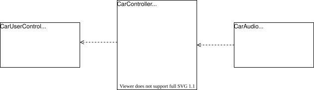
（1）CarUserContol 类相当于现实赛车中的油门、刹车、方向盘等，用于接收用户输入为 CarController 提供数据。
（2） CarController 类是赛车物理的核心。模拟显示赛车中发动机、变速箱、转向辅助、动力输出等。
（3）CarAudio 类负责赛车的音效，主要是根据发动机转速产生不同音调的引擎声等。
Building 系统的类图如图 10 所示。
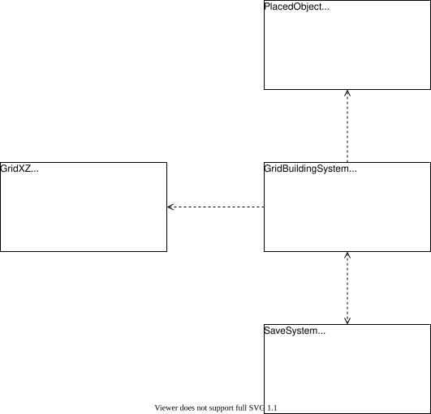
（1） PlacedObject 类控制赛道元件，放在 GameObject(Prefab) 上, 主要负责赛道元件的 Create 和 Destroy 方法。
（2）GridXZ 类是网格系统核心，使用一个二维数组，提供一些方法修改二维数组中的数据，并提供一些方法实现游戏世界坐标到数组坐标之间的转换。
（3）GridBuildingSystem 类是建造系统的核心，负责将赛道元件放置在网格系统中生成赛道。
（4）SaveSystem 用于实现赛道信息在内存与硬盘形式的转换。
Mutiplayer 系统的类图如图 11 所示。
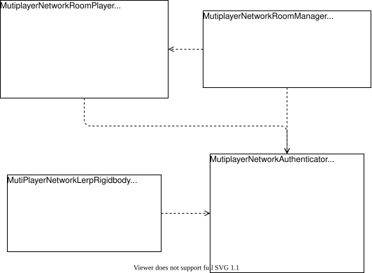
（1）MutiplayerNetworkAuthenticator 类是网络系统的核心，负责服务器端和客户端之间的消息传递协议。
（2）MutiplayerNetworkRoomPlayer 类负责房间成员功能的实现。
（3）MutiplayerNetworkRoomManager 类是房间功能的实现。
（4）MutiPlayerNetworkLerpRigidbody 类负责联机游戏中多个赛车的坐标同步，由于不同玩家之间会出现网络延迟等问题，采用线性插值的方法缓解坐标同步因网络延迟导致的影响。